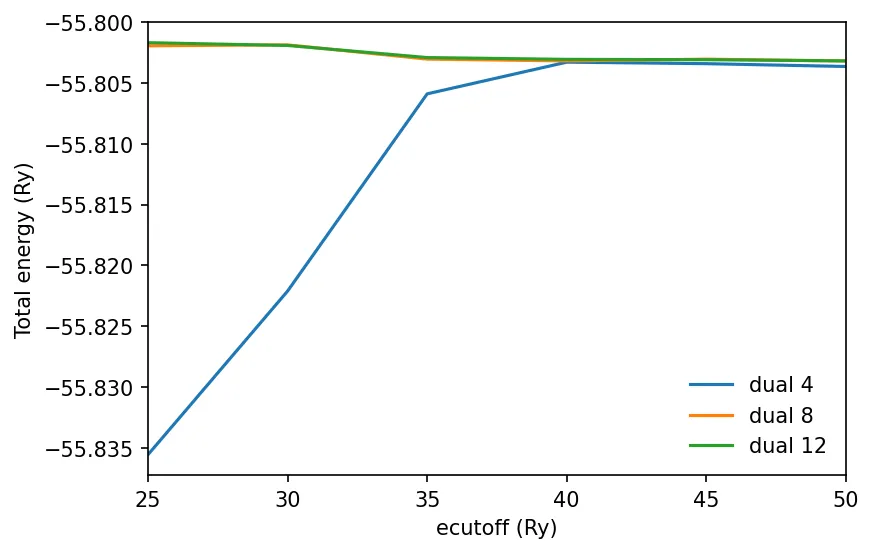
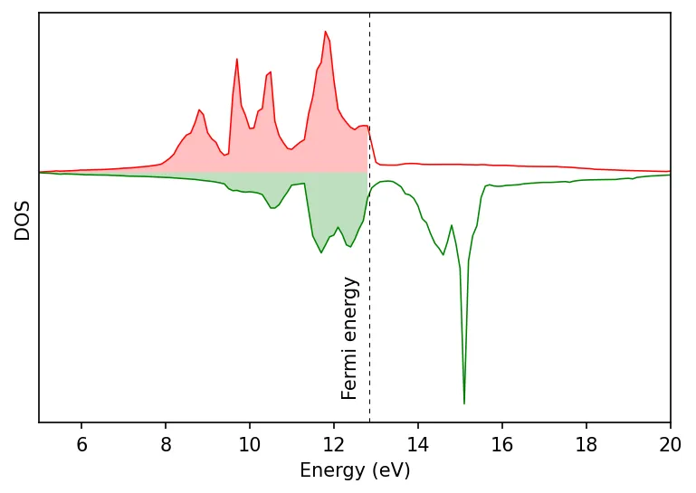
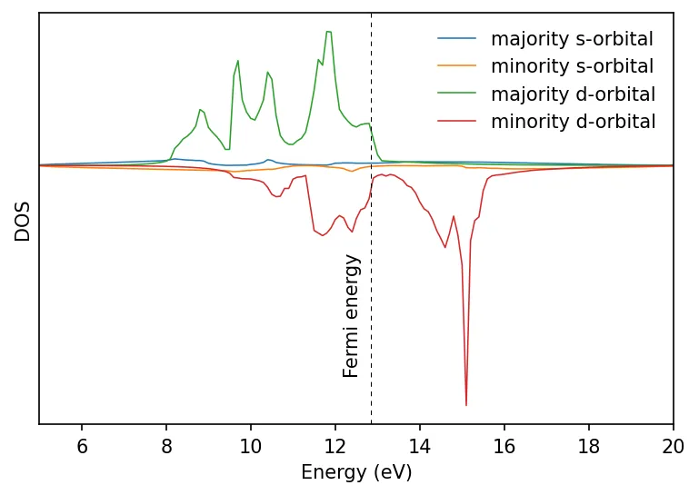
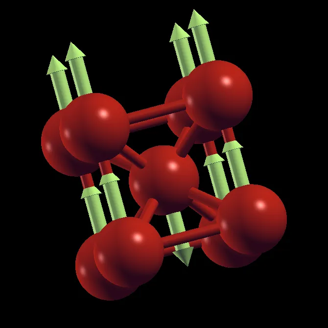

Fe (magnético)
Este exemplo segue a escola online do ICTP 2021.
Vamos calcular os orbitais de KS por SCF para o ferro magnético (nspin=2). Como os orbitais d do Fe são localizados/
Se a estrutura cristalina tiver apenas um átomo por célula unitária, ou apenas um tipo de átomo, o único ordenamento possível é o ferromagnético. Nesses casos, precisamos montar uma supercélula com mais átomos ou rotular vários átomos separadamente, para que suas orientações magnéticas possam ser diferentes, permitindo estados finais ferro ou antiferromagnéticos.
Rode os cálculos SCF para as estruturas ferro e antiferromagnética. Note que, no caso ferromagnético, temos a estrutura BCC com um único tipo de átomo, enquanto no antiferromagnético usamos a estrutura cúbica simples com dois rótulos atômicos diferentes. No cálculo antiferromagnético, precisamos começar com spins iniciais opostos.
pw.x -i pw.scf.fe_fm.in > pw.scf.fe_fm.out
pw.x -i pw.scf.fe_afm.in > pw.scf.fe_afm.outNo cálculo AFM, mesmo começando de um estado FM (digamos, starting_magnetization=0.6 para os dois tipos de átomo), o cálculo ainda convergiria para o estado AFM, pois esse é o verdadeiro estado fundamental deste sistema, embora leve mais iterações. Se o sistema tiver uma superfície de potencial complexa com mínimos locais, é possível obter magnetizações finais diferentes dependendo da magnetização inicial. Nesses casos, um critério de convergência mais rigoroso pode ajudar.
No caso de pseudopotenciais ultrasoft, o padrão do Quantum ESPRESSO de ecutrho igual a 4 vezes o ecutoff não é suficiente. Precisamos definir o ecutrho como 8 ou até 12 vezes o ecutoff, e testar a convergência para os valores escolhidos.
Teste de convergência para USPP
Abaixo está o script do PWTK:
# load the pw.x input from file
load_fromPWI fe_scf_fm.in
# dual is the ratio ecutrho/ecutwfc
foreach dual { 4 8 12 } {
set fid [open etot-vs-ecutwfc.dual$dual.dat w]
foreach ecutwfc [seq 25 5 50] {
set name pw.Fe.scf.ecutwfc-$ecutwfc.dual-$dual
SYSTEM "ecutwfc = $ecutwfc
ecutrho = $ecutwfc*$dual "
runPW $name.in
set Etot [pwo_totene $name.out]
puts $fid "$ecutwfc $Etot"
}
close $fid
}Rode o script:
pwtk fe_ecut.pwtk
Cálculo da densidade de estados
Script do PWTK para calcular a DOS e a PDOS:
load_fromPWI fe_scf_fm.in
SYSTEM " ecutwfc = 40
ecutrho = 320 "
set name Fe
runPW pw.$name.scf.in
CONTROL { calculation = 'nscf' }
SYSTEM { occupations = 'tetrahedra' ,
degauss = , ! this is how variable is unset in PWTK
}
K_POINTS automatic {
12 12 12 1 1 1
}
runPW pw.$name.nscf.in
DOS "
fildos = '$name.dos.dat'
Emin = 5.0
Emax = 20.0,
DeltaE = 0.1
"
runDOS dos.$name.in
PROJWFC "
filpdos = '$name.pdos.dat'
Emin = 5.0
Emax = 20.0,
DeltaE = 0.1
"
runPROJWFC projwfc.$name.inAbaixo estão os gráficos da densidade de estados total e projetada.


Veja também a estrutura de bandas do Fe com e sem SOC.
Paramagnetismo
Materiais paramagnéticos têm momentos magnéticos flutuantes, que podem não ser bem descritos pela DFT. Uma abordagem é modelá-los no cálculo DFT construindo uma supercélula grande e atribuindo momentos magnéticos orientados aleatoriamente.
Note também que a DFT supõe temperatura zero, então faz sentido fazer cálculos FM ou AFM para sistemas magnéticos.
Visualizando os momentos magnéticos
Podemos usar o XCrySDen para visualizar a orientação dos momentos magnéticos. O XCrySDen não lê diretamente os vetores de momento magnético das saídas do Quantum ESPRESSO; em vez disso, precisamos criar o arquivo de entrada .xsf com os momentos magnéticos como vetores de força. Você também pode trocar a cor de fundo preta pelo menu Palette, à esquerda do menu File.
# this is a specification for crystal structure
CRYSTAL
# primitive lattice vectors (in Angstroms)
PRIMVEC
2.8681404710 0.0000000000 0.0000000000
0.0000000000 2.8681404710 0.0000000000
0.0000000000 0.0000000000 2.8681404710
# conventional lattice vectors (in Angstroms)
CONVVEC
2.8681404710 0.0000000000 0.0000000000
0.0000000000 2.8681404710 0.0000000000
0.0000000000 0.0000000000 2.8681404710
# First number stands for number of atoms in primitive cell
# the second number is always 1 for PRIMCOORD coordinates
# followed by atomic coordinates (in Angstroms) and forces:
# AtNum X Y Z Fx Fy Fz
PRIMCOORD
2 1
26 0.0000000000 0.0000000000 0.0000000000 0.00 0.00 0.01
26 1.4340702350 1.4340702350 1.4340702350 0.00 0.00 -0.01Abra o arquivo pelo menu do XCrySDen: File → Open Structure → Open XSF. Depois vá ao menu Display e selecione Forces. Para ajustar a escala dos vetores, vá em Modify → Force Settings e defina um fator de comprimento (Length factor) adequado.

Conteúdo adaptado de Magnetic system: bulk iron, do Quantum Espresso Tutorial de Pranab Das, sob licença CC BY 4.0. Alterações: texto traduzido para o português; layout e navegação adaptados.